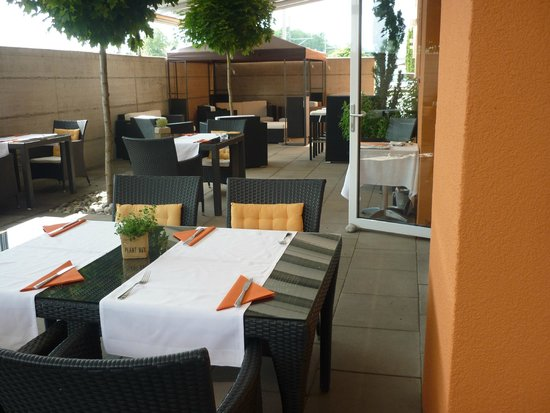
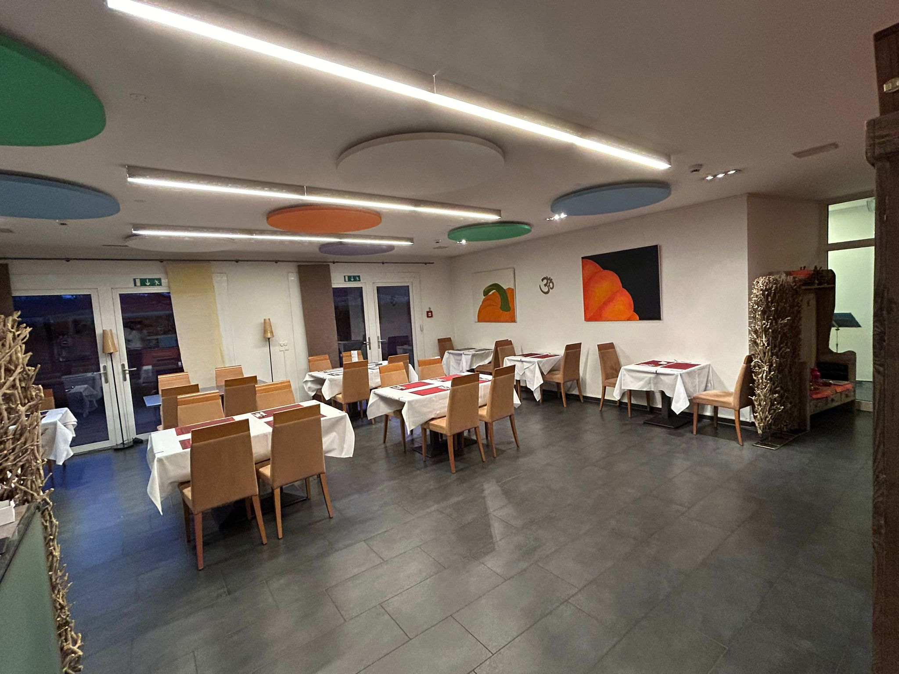
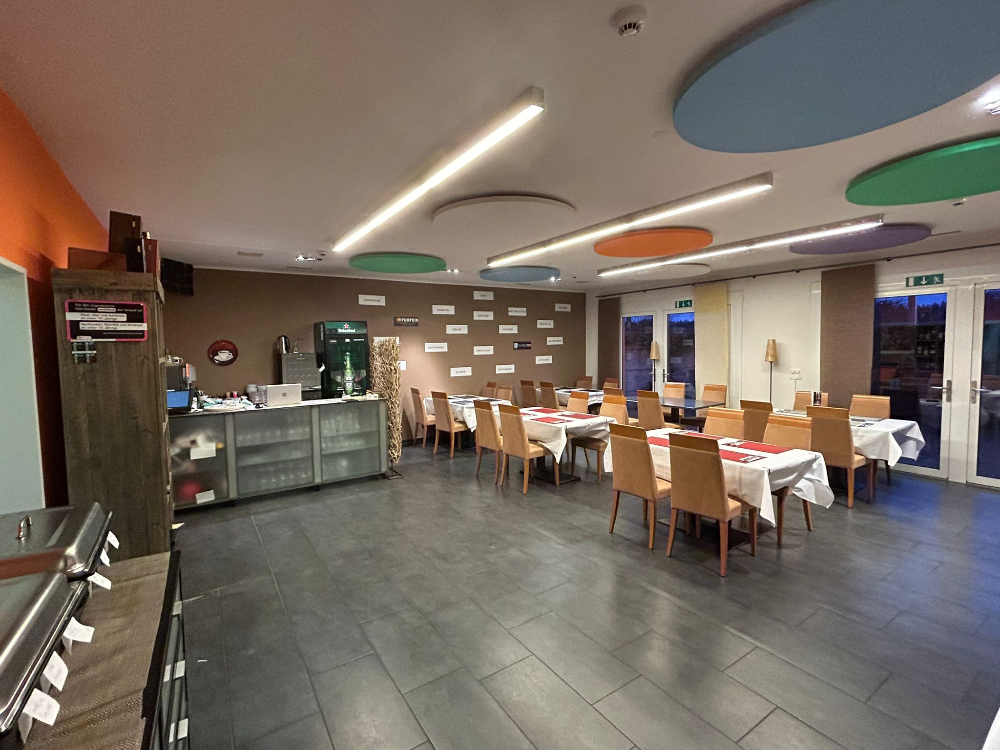
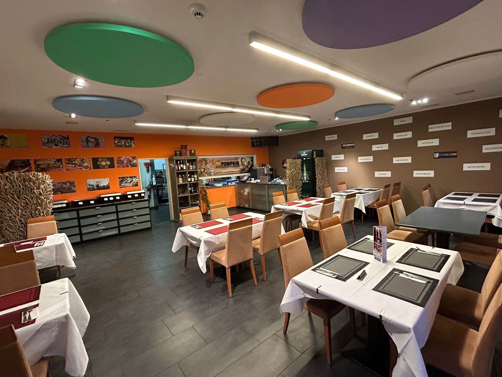
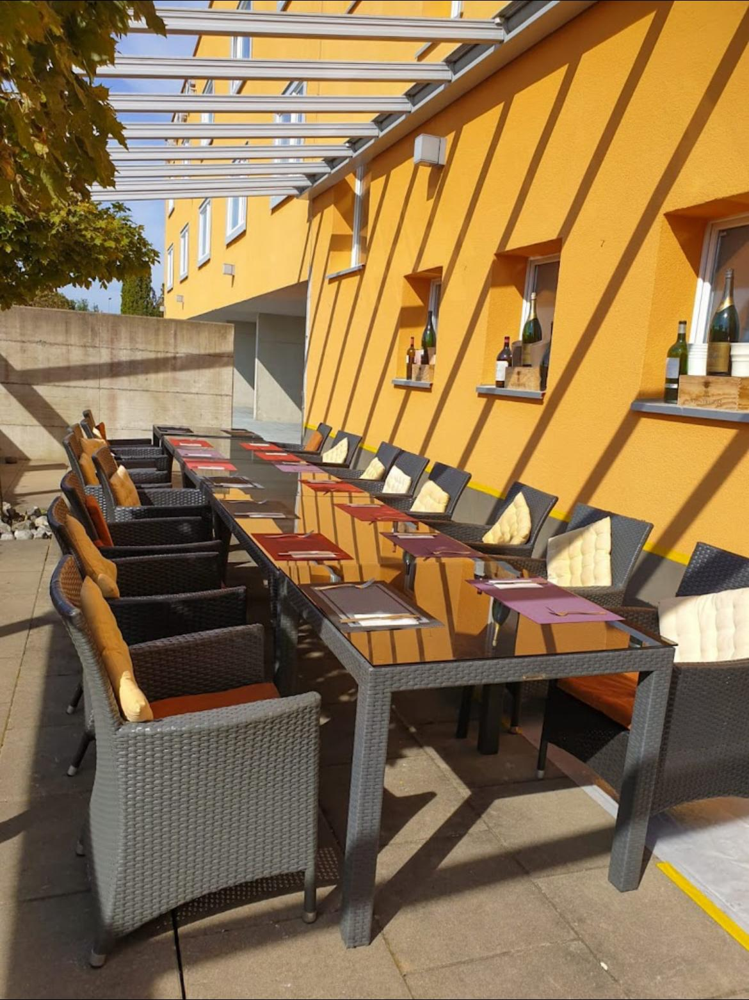
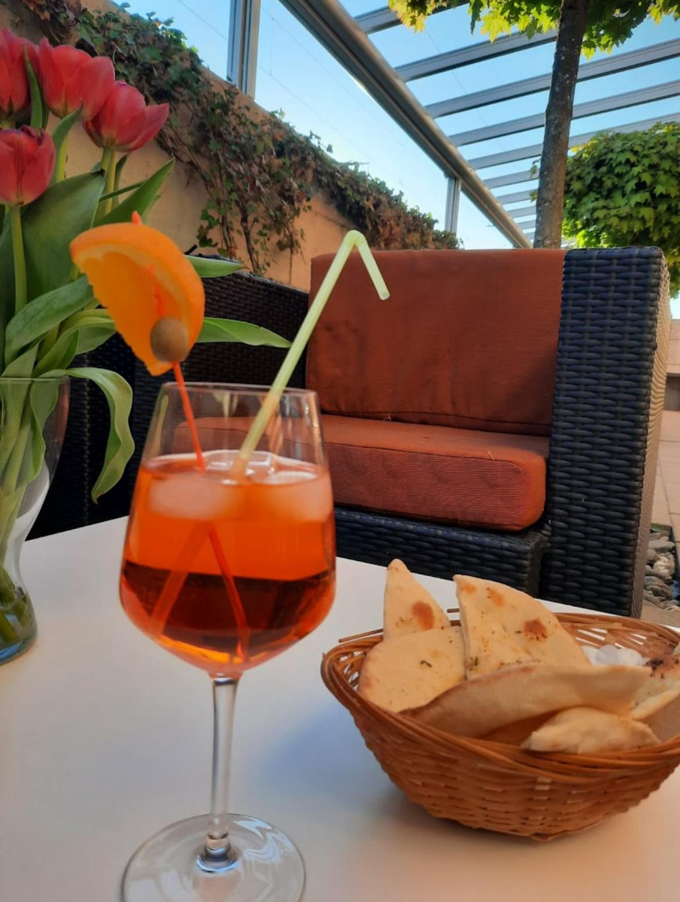

Galerie







Seit dem 1. Februar geöffnet an der Luppmenstrasse 13, 8320 Fehraltorf
Wir freuen uns, Sie in unserem neu eröffneten indischen Restaurant begrüßen zu dürfen! Bei Restaurant Pumpkin bieten wir authentische indische Küche mit einer Vielzahl von köstlichen Gerichten, die mit traditionellen Gewürzen und frischen Zutaten zubereitet werden.
Unser Restaurant befindet sich unter der Adresse:
Luppmenstrasse 13, 8320 Fehraltorf
Für Takeaway oder Lieferung rufen Sie bitte an:
Telefon: 078 910 69 38 oder 044 955 08 45
Unser Team besteht aus leidenschaftlichen Köchen, die darauf bedacht sind, Ihnen ein unvergessliches kulinarisches Erlebnis zu bieten. Von klassischen Currys bis hin zu würzigen Tandoori-Spezialitäten gibt es für jeden Geschmack etwas zu entdecken.
Besuchen Sie uns und erleben Sie die Aromen Indiens bei Restaurant Mumbai Masala!
Indische Linsensuppe (Lentil soup) CHF7.50
Indische Hühnersuppe (Chicken soup) CHF9.00
Tomatensuppe CHF8.00
Gemischter Salat (Mixed Salad) - Gurken, Tomaten, Mozzarella CHF10.00
Grüner Salat (Green Salad) CHF9.00
Samosa (Teigtaschen mit Kartoffeln und Erbsen) CHF9.00
Vegetable Pakoras (Frittiertes Gemüse) CHF9.00
Spring Rolls (Frühlingsrollen mit Gemüse) CHF9.00
Mix Vegi Platter (Frittiertes Gemüse, Samosa, Spring Rolls) CHF17.50
Garlic Naan (Naan gefüllt mit Knoblauch und indischen Gewürzen) CHF7.00
Alu Ka Parantha (Naan gefüllt mit Kartoffeln und indischen Gewürzen) CHF8.00
Papadum (Dünnes knuspriges Brot) CHF4.00
Dal Makhani (Indische Hülsenfrüchte mit Butter, Zwiebeln und indischen Gewürzen) CHF24.00
Alu Gobi Masala (Blumenkohl und Kartoffeln mit Kräutern und Gewürzen) CHF25.50
Channa Masala (Getrocknete Kichererbsen mit indischen Gewürzen) CHF24.50
Palak Paneer (Hausgemachter indischer Käse mit Spinat und indischen Gewürzen) CHF26.00
Mixed Vegetables (Mischgemüse in Butter mit indischen Gewürzen gekocht) CHF25.50
Shahi Paneer (Indischer Rahmkäse gekocht in Tomatenrahmsauce mit indischen Gewürzen) CHF27.50
Navartan Korma (Mildes Curry aus dem Norden Indiens mit Kardamom, Muskatnuss & Mandeln) CHF28.50
Chicken Curry (Poulet gekocht nach Punjabi-Art mit speziellen indischen Gewürzen) CHF28.00
Chicken Jalfrezi (Poulet gebraten mit Zwiebeln, Tomaten, Paprika und Pfeffer) CHF29.50
Chicken Korma (Poulet gekocht nach nordindischem Rezept mit Rahm) CHF32.00
Chicken Madras (Poulet gekocht in einer scharfen Kokosnuss-Currysauce) CHF30.00
Butter Chicken (Poulet gekocht in Tomatenrahmsauce mit indischen Gewürzen) CHF32.00
Chicken Vindaloo (Poulet gekocht mit Kartoffeln - sehr scharf) CHF28.00
Chicken Tikka Masala (Ofengrillierte Hühnchenbrust, gekocht in einer cremigen Tomaten-Zwiebel-Masalasauce) CHF31.00
Chicken Ala Cochin (Poulet gekocht mit grüner Chili-Kokosmilch und Currysoße - Südindische Art) CHF28.50
Lamm Curry (Lamm gekocht mit indischen Gewürzen nach Punjabi-Art) CHF32.00
Lamm Saag (Lamm gekocht mit Spinat und indischen Gewürzen) CHF33.50
Lamm Karahi (Lamm gekocht mit Knoblauch, Ingwer und indischen Gewürzen) CHF33.50
Lamm Rogan Josh (Lamm gekocht mit Tomatensauce und indischen Gewürzen) CHF32.50
Lamm Dahi Wala (Lamm gekocht mit Joghurtsauce und indischen Gewürzen) CHF32.50
Peas Pulao (Basmatireis mit Erbsen und Zwiebeln) CHF8.50
Zeera Rice (Basmatireis mit Kreuzkümmel) CHF6.50
Plain Rice (Basmatireis) CHF5.00
Raita (Joghurt mit Gurken und Gewürzen) CHF6.00
Butter Naan (Indisches weißes Fladenbrot mit Butter) CHF6.00
Pyaz Ka Kulcha (Naan gefüllt mit Zwiebeln, Knoblauch) CHF7.00
Garlic Naan (Naan gefüllt mit Knoblauch und indischen Gewürzen) CHF7.00
Alu Ka Parantha (Naan gefüllt mit Kartoffeln) CHF8.00
Rufen Sie uns an, um einen Tisch zu reservieren: Telefon: 078 910 69 38 oder 044 955 08 45